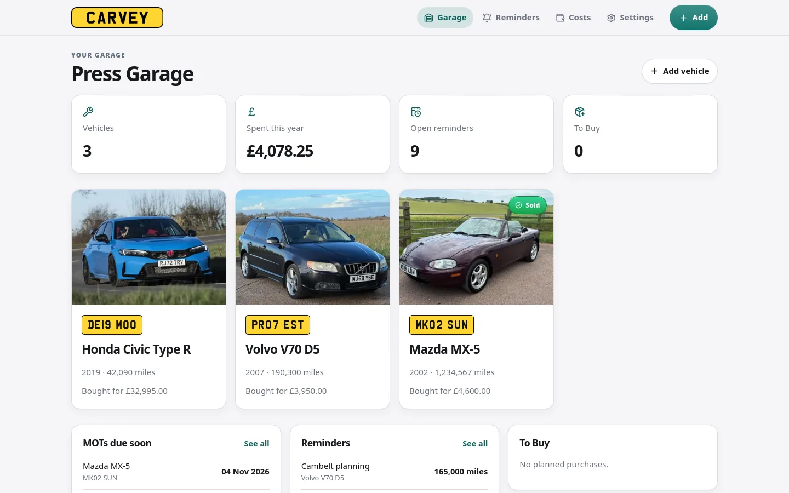
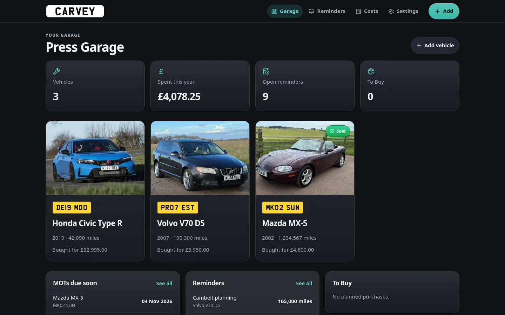
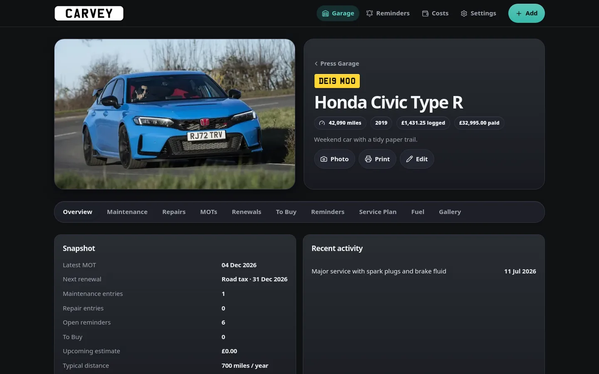
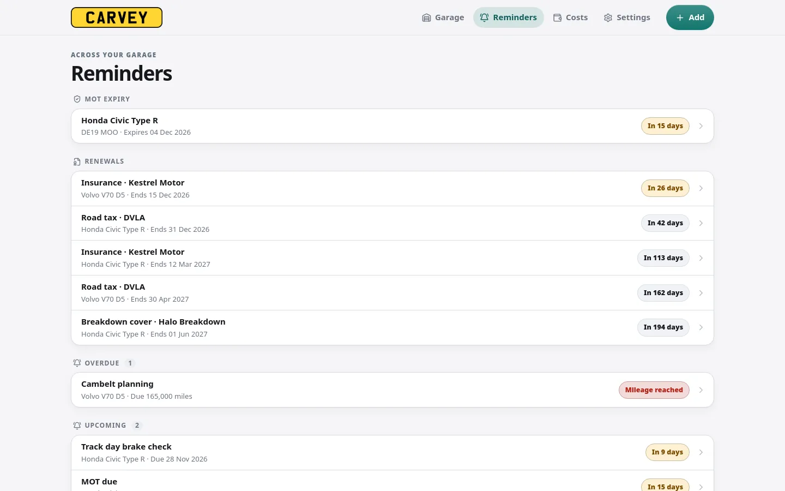
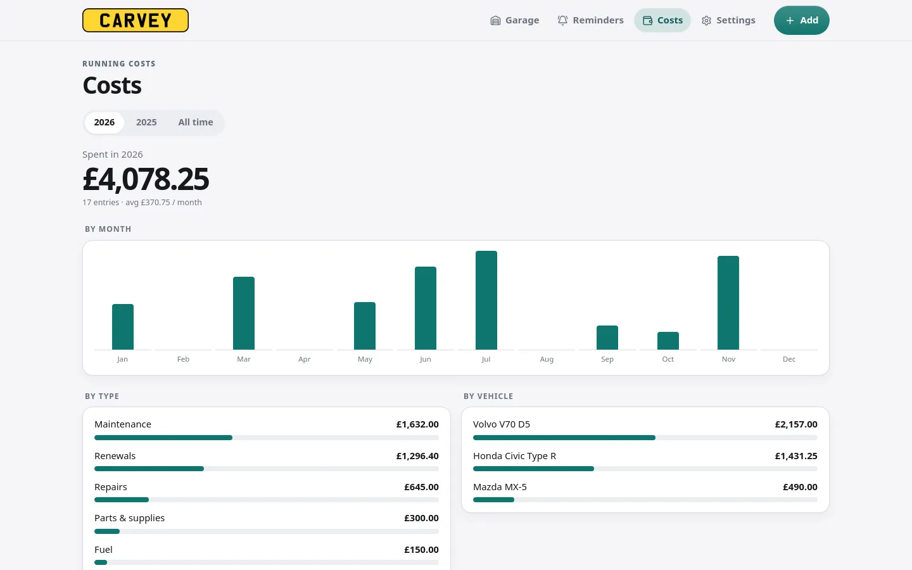
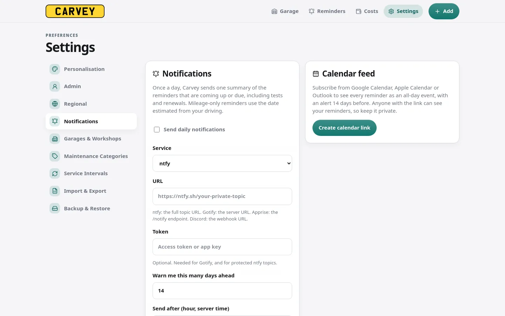
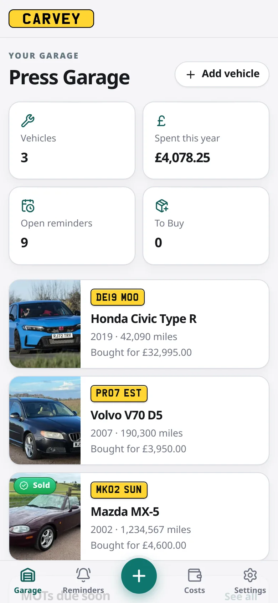
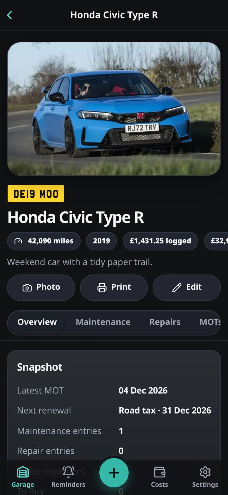
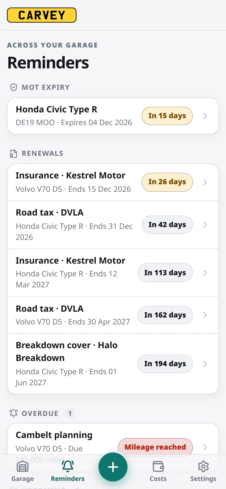

The service book for every car you own
Service history, MOTs, renewals, reminders, receipts and running costs, kept on your own server. One Docker container, one SQLite database, no cloud account.
Latest release · Release notes

- Runs on
- Your NAS, homelab or VPS
- Stores
- One SQLite file and an uploads folder
- Sends
- Nothing, unless you set up notifications
- Licence
- MIT, free and open source
Built like an app, not a spreadsheet
A page for every car, one list of what's due, the running costs across the lot, and a daily nudge when something needs doing.




Maintenance, repairs, MOTs, renewals, fuel, reminders, service plan, to-buy list and gallery, each in its own tab.
MOT expiry, insurance, road tax and every open reminder in one list, overdue first.
Spend by month, type and car, for any year or all time.
A daily summary to ntfy, Gotify, Apprise, Discord or any webhook, plus a calendar feed for Google, Apple or Outlook.
Log it from the driveway
Add Carvey to your home screen and it runs like an app, with tab navigation and bottom-sheet forms.
- Quick addLog a service, MOT, renewal or fill-up for any car from the bottom bar
- Receipts on the spotPhotograph the invoice and attach it to the record
- Works with no signalPages you've opened stay readable offline



Everything a glovebox full of paperwork should be
From oil changes to the road tax, every date and receipt for every car lives in one place.
Nothing sneaks up on you
Reminders work by date, mileage or both, and repeat if you want them to. Mileage-only reminders get a due date estimated from how far you drive.
Insurance, road tax, warranty and breakdown cover each keep a reminder on their renewal date, and logging an MOT resets the MOT reminder.
Once a day Carvey sends one summary of what's due, or you can subscribe to a calendar feed instead.
Carvey: 1 item due, 1 coming up
Cambelt planning · Volvo V70 D5 (PR07 EST): due now (165,000 miles)
- PR07 EST Cambelt planningVolvo V70 D5 · due 165,000 miles Mileage reached
- DE19 MOO MOTHonda Civic Type R · expires 04 Dec 2026 In 15 days
- PR07 EST InsuranceVolvo V70 D5 · ends 15 Dec 2026 In 26 days
- DE19 MOO Road taxHonda Civic Type R · ends 31 Dec 2026 In 42 days
For each car
- Maintenance and repairs
- Date, mileage, cost, category, garage and notes
- MOTs
- Result, expiry and cost, with the reminder reset for you
- Renewals
- Insurance, road tax, warranty and breakdown cover, with provider, policy number and documents
- Fuel
- Fill-ups with volume, cost and odometer
- Service plan
- Intervals like oil every 12 months or 6,000 miles, linked to reminders
- To buy
- Planned parts that turn into a record once bought
- Gallery and attachments
- Photos, receipts and invoices on any record, as PDF or image
- Printable history
- The full service history on paper, for the next owner
Across the garage
- Garage
- Every car with its photo and plate. Sold cars keep their history
- Reminders
- MOTs, renewals and open reminders, grouped by overdue and upcoming
- Notifications
- A daily summary to ntfy, Gotify, Apprise, Discord or a webhook
- Calendar feed
- Reminders as all-day events in Google, Apple or Outlook calendars
- Costs
- Spend by month, type and car, per year or all time
- Quick add
- Log anything for any car from one button
On your server
- Backups
- A full backup every night, plus one-click backup and restore with a preview first
- Import and export
- CSV in and out, with column matching and duplicate detection
- Sign-in
- Two-factor with recovery codes, a list of signed-in devices, or your reverse proxy's login
- Regional settings
- Any currency, miles or km, litres or gallons, yellow or white plates, MOT or inspection
- Your colours
- Light and dark mode, ten palettes, rounded or boxy shapes
Running in about a minute
Carvey ships as one Docker container. No external database and no other services.
-
1
Start the container
With Compose, one
docker run, or Unraid Community Applications. -
2
Open Carvey
Go to
http://localhost:3000in your browser. -
3
Create your account
Set up the admin sign-in, then add your first car.
services: carvey: image: ghcr.io/revise0592/carvey:latest ports: - "3000:3000" volumes: - ./data:/app/data environment: TZ: Europe/London restart: unless-stopped
$ docker run -d \ --name carvey \ -p 3000:3000 \ -v ./data:/app/data \ -e TZ=Europe/London \ --restart unless-stopped \ ghcr.io/revise0592/carvey:latest
# 1. Open Apps on your Unraid dashboard # 2. Search for Carvey # 3. Press Install, no command line needed
Questions
Anything else? Open an issue or suggest a feature.
Where is my data stored?
In one SQLite database and an uploads folder under CARVEY_DATA_DIR (/app/data in Docker). Mount that folder as a volume. Carvey also saves a full backup there every night and keeps the newest three, and you can download any backup as a zip from Settings.
Does Carvey send anything to the internet?
Only the notifications you set up, to the service you choose. There are no accounts, analytics or telemetry.
Can I use it on my phone?
Yes. Open Carvey in your phone's browser and add it to your home screen. You get a full-screen app with tab navigation and quick add, and pages you've opened stay readable offline.
Can I bring my existing records?
Yes, from CSV. In Settings → Import & Export, pick what the file holds and which car it's for, or match rows by a registration column. A preview shows the columns used, rows that will be skipped and any duplicates before anything is saved.
Can I use it outside the UK?
Yes. In Settings → Regional you can pick any ISO 4217 currency, miles or kilometres, litres or gallons, the date format and the plate colour. The annual test can be called MOT, Inspection, a name of your own, or turned off.
Can I sign in through my reverse proxy?
Yes. Set CARVEY_AUTH_MODE=proxy and a CARVEY_PROXY_SECRET that your proxy adds to each request, and Authelia, Authentik or similar handle sign-in. Requests without the secret still get the normal password and two-factor sign-in.
I've forgotten my password
Run docker exec -it <container> node scripts/reset-password.mjs, with no restart. Add --disable-2fa to turn off two-factor as well. Every reset signs out all existing sessions.
Give your cars the paperwork they deserve
Free, open source and yours to keep.